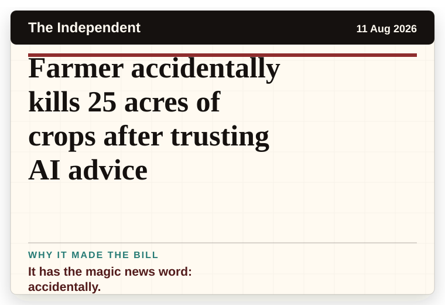
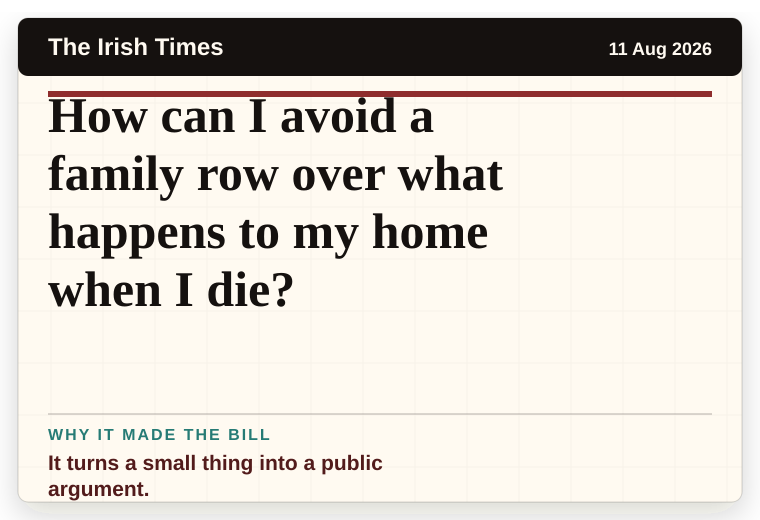
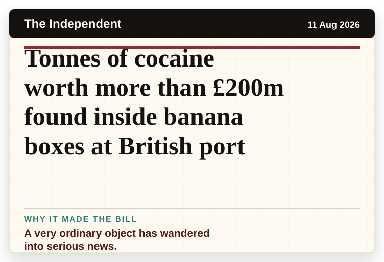
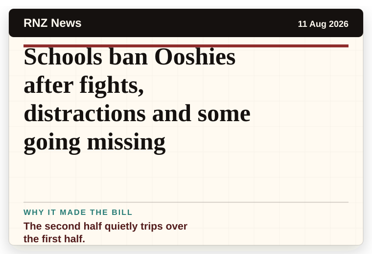
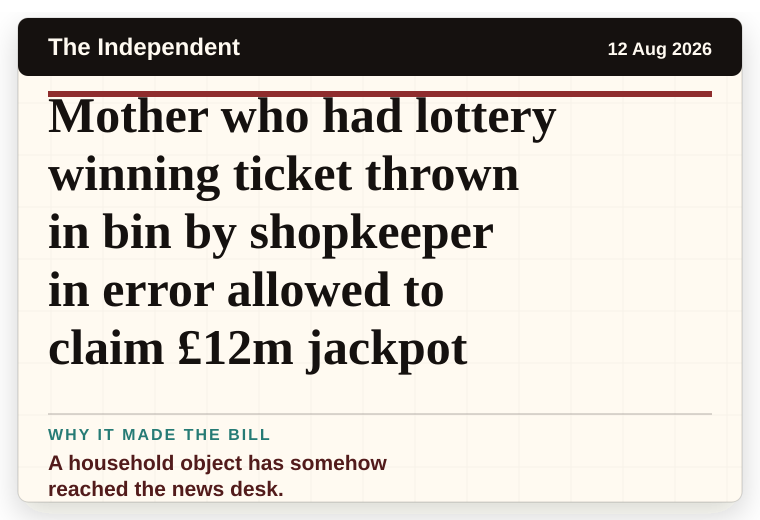
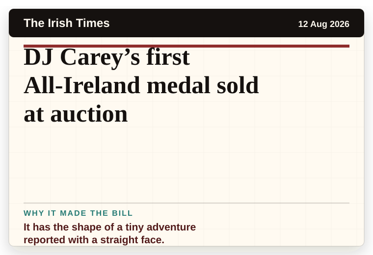
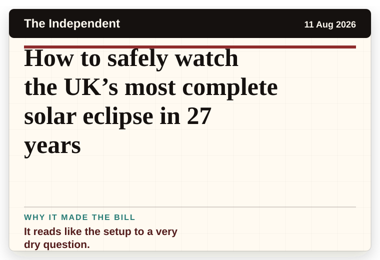

NT News
Australia
SA’s first cheese bar shuts up shop — but it’s not the end
A very ordinary object has wandered into serious news.
The latest daily picks, linked back to the original sources. Search the room, pick a source, or follow a headline out to the full story.
Record updated: 12 Aug 2026, 07:50 AM AEST
Showing 15 headline candidates from the refresh run completed on 12 Aug 2026, 07:50 AM AEST.
A very ordinary object has wandered into serious news.

The scale is doing deadpan comedy.

The headline is already trying not to laugh.

A wonderfully specific detail has taken centre stage.

The headline is already trying not to laugh.

A wonderfully specific detail has taken centre stage.

It has the shape of a tiny adventure reported with a straight face.

It has the magic news word: accidentally.

The question mark makes it feel like the host has paused for the room.

It turns a small thing into a public argument.

A very ordinary object has wandered into serious news.

The second half quietly trips over the first half.

A household object has somehow reached the news desk.

It has the shape of a tiny adventure reported with a straight face.

It reads like the setup to a very dry question.